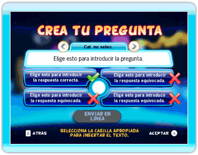

23 |
Creador |
 |
|
TV Show King 2 ofrece un creador de preguntas a cada jugador para que pueda compartir sus propias preguntas y conseguir preguntas de otros jugadores.
Para usar el Creador de preguntas, tienes que conectarte a la Conexión Wi-Fi de Nintendo. Para obtener ayuda sobre cómo acceder a la Conexión Wi-Fi de Nintendo, por favor visita el sitio support.nintendo.com.
 Interactúa con las distintas partes de la interfaz para crear tu pregunta. Apunta al cuadro de la pregunta o a cualquiera de los cuatro recuadros de las respuestas con el Wii Remote y oprime el Botón A para activar el teclado en la pantalla. Usa ese teclado para introducir tus preguntas y tus respuestas. Selecciona el cuadro de la categoría para elegir la categoría de tu pregunta. Y para terminar, cuando consideres que tu pregunta está lista, apunta al icono ‘Enviar en línea’ con el Wii Remote y oprime el Botón A. ¡Y eso es todo!
Descargar preguntas es muy fácil: Apunta al icono ‘Actualizar preguntas’ con el Wii Remote y oprime el Botón A para conseguir nuevas preguntas para tu juego. Para que siempre tengas suficiente espacio en la memoria de la consola Wii para conseguir nuevas preguntas, las preguntas viejas serán sustituidas por las nuevas.
Si quieres borrar un paquete de preguntas de tu consola Wii, solo tienes que seleccionar el icono ‘Borrar preguntas’. Cualquier rastro de esa pregunta desaparecerá de tu consola Wii. ¡Recuerda que, si quieres, puedes volver a descargar las preguntas que has borrado! |
 |
 |
 |